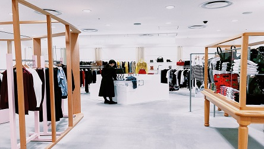

What You Should Look for in an Online Boutique Clothing Store

The popularity of fashion is never fading.Every year, a new trend of fashionable clothes, bags, shoes, and accessories are displayed in stores.However, there are times when walking around the mall looking for an outfit will be tiring.Sometimes, the malls can be overcrowded with people, and you have to wait in a long line to pay for what you want.If you are in a hurry, this might be an issue for you.An online boutique clothing store is perfect for individuals that do not have the patience and time to hit the mall and look for an outfit they want.
Why Online Boutique Clothing
An online store for boutique clothing is quite a trend these days.With the influence of social media, a lot of individuals prefer to search what they need online instead of going out.It saves them the hassle, effort, and energy.Most clothing lines are taking advantage of this situation to increase their exposure and improve their sales.Since most people use the internet, they can easily search for any item they wish to purchase online.
Choosing The Right Online Boutique Clothing
Social media has changed the view of how online marketing works.Boutique clothing takes advantage of the internet to promote the products and services they sell.However, before you engage in an agreement with an online store, there are things that you need to check-out to ensure that the store is legit.
Customer Reviews
One of the most important things to consider before buying online boutique clothing is by reading customer reviews.The reviews written by a previous customer can help make up your mind whether you want to proceed with your order.It will also help decide whether the product is a good fit for you or if the clothing they sell are of good quality.
Payment Methods
Many boutique clothing stores offer various payment methods to make it easier for their clients.You should look into its available options before you purchase an item.There are online stores with limited payment methods, so you might encounter problems when checking out an item.The most common payment options are via credit/debit card, PayPal, Amazon Pay, Google Pay, among others.
Delivery Options
One other important factor in selecting the best boutique clothing online is their delivery options.It is a major consideration in any online store that wishes to gain more clients.Most customers prefer to purchase products from businesses with more convenient delivery options.It will be a hassle if you buy a product only to realise that the store does not deliver to your area.You would end up cancelling your order, which can be disappointing.
You may also look into the free shipment option.One of the marketing strategies for boutique clothing is to offer free shipping, provided that the items you purchased reach the threshold you need to make use of the option.
After-Sales
You must verify if the store provides after-sales service before making your purchase.If the boutique clothing store is not providing quality customer service, and you have a problem with the item you purchased, you may have difficulty asking for a refund or replacement.Choosing an online store that can cater to your concerns, issues, and queries anytime is always better.
Looking for trustworthy boutique clothing online is a challenge.Not all customer experiences are positive.However, with the tips on what you should look for in an online store, it can help ease your worries on the purchases that you made.You can ask for your family, friends, or anyone in the community if they are familiar with the store to make sure that it is legitimate.If it is not familiar to you, it is better not to risk it.
[bsa_pro_ad_space id=4]
Share on Facebook Tweet Follow us
Posted On: 2020-08-01T00:00:00
Posted By: Sylvia james


Content Date: 2020-08-01
Download Date: 2021-07-09
Document ID: L0C04DRR0